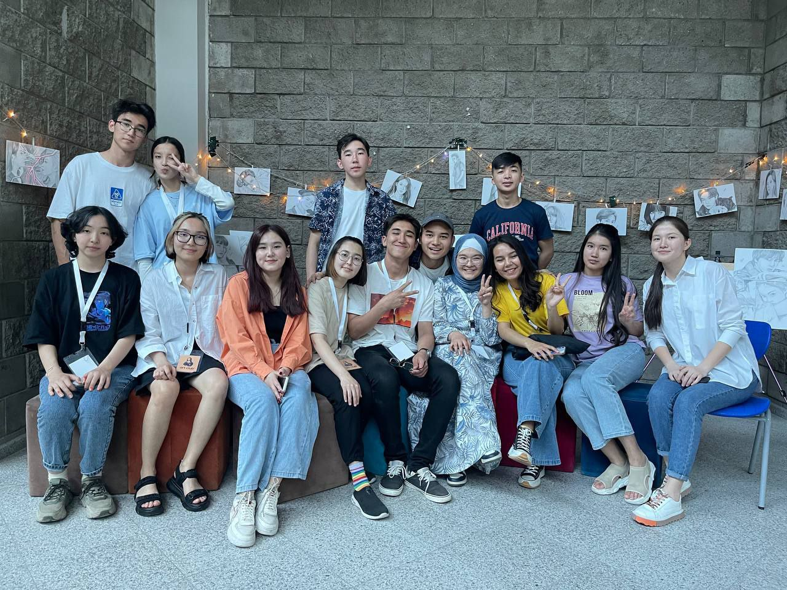

Studentship is an incredibly interesting, bright, intense and exciting time. New acquaintances, entertaining lectures, creative tasks, conversations with classmates in between couples, a busy session period ... all this creates an indescribable atmosphere of student life. This has its own romance.
What does the club give people?
First of all, the club gives spiritual harmony and balance between ordinary weekdays and creativity. If there were no creativity, there would be no art, there would be no culture, music.
The main goal of the Art Club is to develop and support creative personalities.
Each person has his own potential and we must reveal this potential and show that this person is not simple and he has a rich imagination and a huge talent and only needs to shift efforts.
The second goal of the club: Not to let society forget about art and creativity.Every time we try to inspire students and show their creativity and work.

Art is not only drawing, Art is art. People
show their creativity not only by drawing,
we have Embroidery,graphic design,creating
models,animation,drawing comics with different
styles, blogging, making high-quality and funny videos and photos.
The art club was created in 2009, when three students decided for
themselves that art is something more than just a hobby.
A team called itself "Art Club" was recruited.
Over time, more and more students came to the club.
To this day, students have the opportunity to develop their creative abilities.
Why join a student club?
A simple question that you still need to answer yourself before you join this or that association.
There are several reasons. One of them is the desire for communication,
the need for socialization, expanding the circle of acquaintances.
Another reason, no less logical, is related to the variety of opportunities for self-realization and learning something new.
Studentship is a great time to continue your favorite business or find a new occupation to your liking.
In addition, the club, which includes various studios,
clubs and associations, allows you to solve issues of information and material support for its individual organizations.
Being a kind of intermediary between the management of the university and the participants of various student associations,
the club centrally helps to develop individual sections.
Whether or not to participate in the club's events is a personal matter for everyone,
but I would like to note that versatile development has a positive effect on the main activity of a student at the university — studying.
And, of course, people are important, acquaintance with whom is so important in student years.
These connections not only enrich a person internally,
but also can become the foundation of long-term and expensive friendships or partnerships.